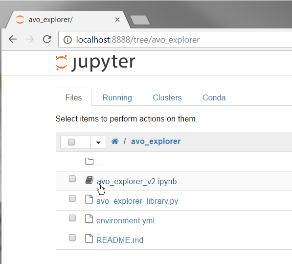

AVO Explorer
Interactive tool to explore AVO classes.
Written in Python, delivered via Jupyter. Uses the standard scientific Python libraries plus Agilegeo’s bruges geophysical library.
To launch the interactive notebook click this button:

How to use it
If you need a more complete introduction to Jupyter notebooks, see here.
Otherwise, read on.
The first thing you’ll see after you click on the Launch Binder button is this window, a sort of file manager to open notebook documents, text file etc (it’s called the Notebook Dashboard):
